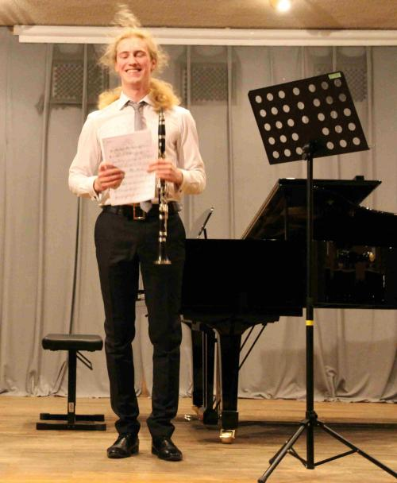

Hobbies
This section is dedicated to my interests outside of computer science.
This section is dedicated to my interests outside of computer science.
Music was a big part of my education, and even when school has finished, it is still a big part of my life, as a hobby.
I think it's big enough to get a separate paragraph.
 I spent 10 years learning how to play clarinet. I did not continue clarinet education but everything I have learned is still useful in my further musical adventures. Final chapter of clarinet education was my recital in May 2016. I thought it would be nice to share some fragments here:
Francis Poulenc - Clarinet Sonata
Robert Schumann - Fantasiestücke, Op. 73
 After obtaining a diploma I did what many clarinet players do, namely picked up the saxophone and started to play jazz.
I really enjoy learning about jazz harmony. It is a subject somewhere between art and science and I find it very compelling.
In order to learn more I attended International Jazz Workshops in Chodziez two times during the summer.
After obtaining a diploma I did what many clarinet players do, namely picked up the saxophone and started to play jazz.
I really enjoy learning about jazz harmony. It is a subject somewhere between art and science and I find it very compelling.
In order to learn more I attended International Jazz Workshops in Chodziez two times during the summer.
For many years I was playing in a rock band on a bass guitar. My love to rock and metal music persisted and currently my main musical activity is composing and recording in my bedroom. This is a solo project that is taking most of my free time. It requires immense efforts and knowledge of a composer, musician and sound engineer. Most of the projects is still in progress but I can share a little part.
My interest in photography started when I found an old film camera at home.
I really enjoy film photography because it forces the photographer to think twice before taking a picture.
At the university I belong to few societies and I am on commitee on two of them.
I joined swing dance in my second year. I instantly fell in love with dancing and with incredibly strong community stretching across the country. I met great people and visited Swing Revolution in Leeds, Whip-ma-whop-ma-hop in York and helped with organising Leicester Leaps In. I teach beginners classes and participate in various events as volunteer. Most recently I led an introductory lesson in Queniborough community centre, during a charity gig of Syston Big Band. Currently I am a Treasurer and Wellbeing and Inclusion Ambassador.
Since University of Leicester does not have a philosophy department, the society is a group of students more or less loosely interested in philosophical topics. We meet once a week and one of the commitee members would introduce everyone to a subject and then lead the discussion. Topics vary from classical philosophical dillemas to more contemporary discussions on philosophy of politics and economical systems.
I was a member of the big band as a saxophone player in my first year. This year I joined it as a guitar player in order to learn more about harmony and reading jazz notation. Big band plays charity gigs, sometimes on a swingaree organised by swing community in the city. We recently played in Leicester Prison during Talent Unlocked festival.

Since I was 10 I was a member of a scouting organisation. Initially a scout, then an explorer I trained to become a team leader before I came to England.
Scouting taught me what is it to be a good person, about teamwork, taught me many skills, manual or not, useful in daily life. It was a great adventure without which I would be a different person.